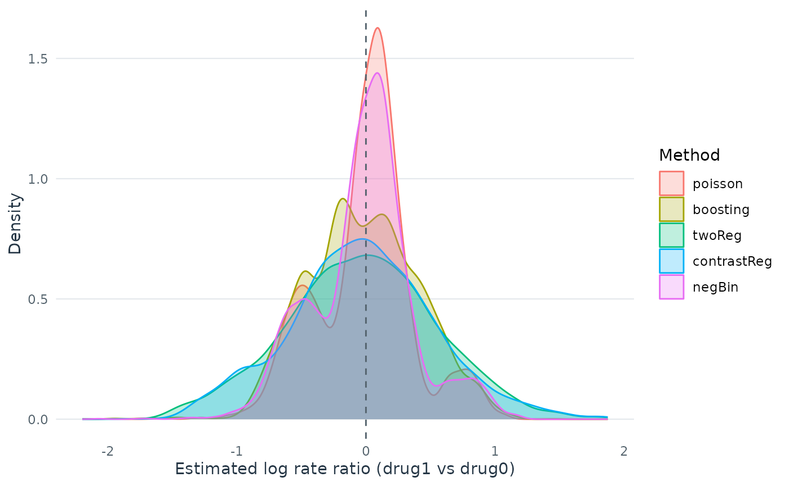
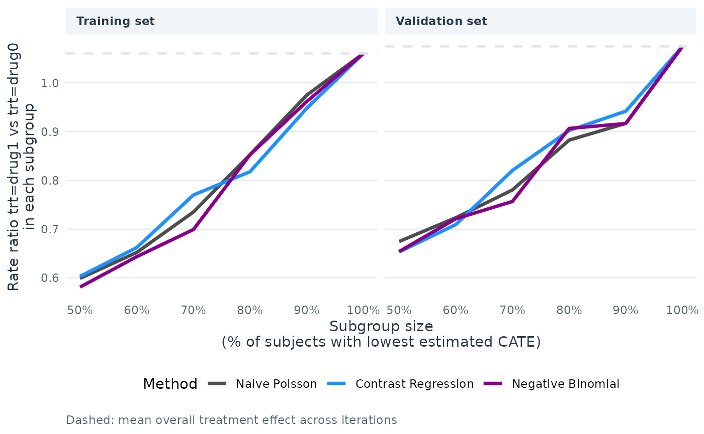
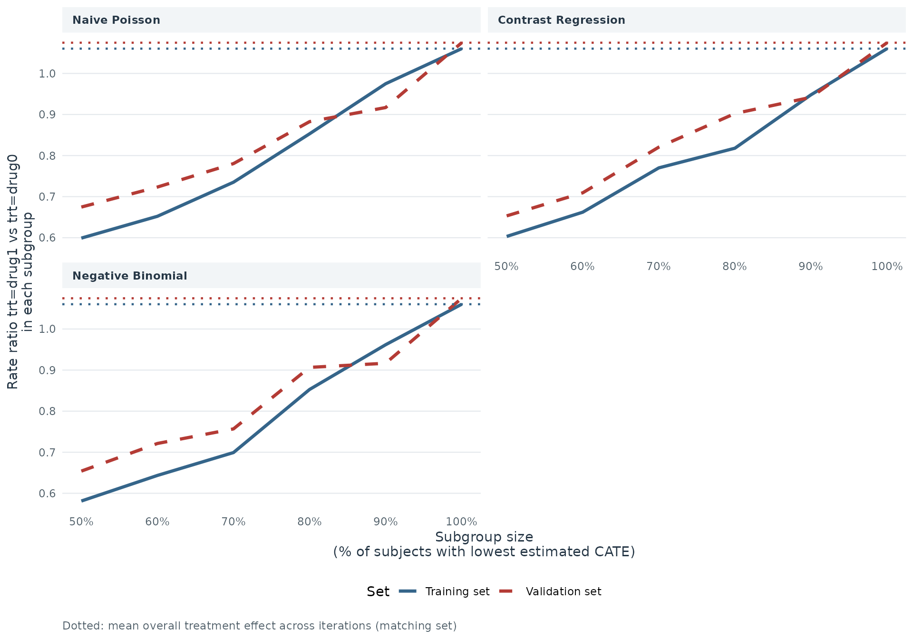
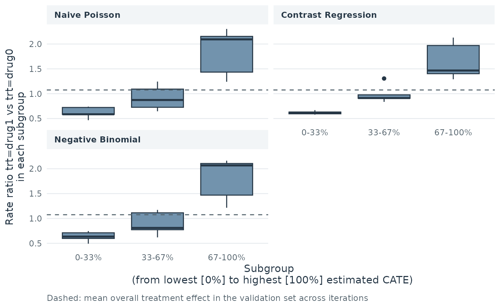

This vignette fits and internally validates conditional treatment-effect scores for count outcomes. The companion ATE example estimates the population-average effect using the same data. Score fitting and validation are distinct; estimated subgroups from the fitting sample are not independent validation.
Prepare the data
library(precmed)
library(dplyr)
#>
#> Attaching package: 'dplyr'
#> The following objects are masked from 'package:stats':
#>
#> filter, lag
#> The following objects are masked from 'package:base':
#>
#> intersect, setdiff, setequal, union
library(ggplot2)
data(countExample)
countExample$age <- as.numeric(countExample$age + attr(countExample$age, "scaled:center"))
countExample$previous_cost <- round(as.numeric(countExample$previous_cost * attr(countExample$previous_cost, "scaled:scale") + attr(countExample$previous_cost, "scaled:center")))
countExample$female <- factor(countExample$female, levels = c(0, 1), labels = c("male", "female"))The example uses 4,000 simulated observations based on a multiple
sclerosis claims-data scenario. The outcome is the number of relapses
during observed follow-up, and years provides exposure
time. The score is interpreted on the conditional rate-ratio scale.
Estimate CATE scores
A population-average effect may vary across patients. We fit
conditional average treatment effect (CATE) scores to rank patients by
estimated treatment effect. catefit() fits scores and
estimates score-defined subgroup effects on the full dataset; internal
validation is discussed below.
poissonfits a Poisson model separately by treatment group.boostinguses gradient boosted regression models (GBM) separately by treatment group.twoRegimplements the doubly robust two regressions estimator in (Yadlowsky et al. 2021).contrastRegimplements the doubly robust contrast regression estimator from (Yadlowsky et al. 2021).negBinfits negative binomial regressions by treatment group. This method is recommended if there is overdispersion in the data.
We can use catefit() to compare these scoring methods
using the outcome and treatment formulas below.
The score represents an estimated conditional log rate ratio:
exponentiating it gives the estimated rate ratio for patients with those
covariates. Lower scores therefore indicate greater estimated benefit
from drug 1 in this example. Chapter 17 describes treatment effect
heterogeneity and methods for CATE prediction (Hoogland et al. 2026). Because
catefit() fits the scores using the full dataset, its
results do not on their own establish performance in new patients.
The mandatory arguments are: response,
data, score.method, cate.model,
and ps.model. The user can also specify the non-mandatory
arguments to fit with the data and problem at hand. Please see the Function
description section for details.
If you run into errors or warnings with your data, it might be
helpful to go over the descriptions to see if you need to alter the
default values. We set n.cores = 1 to run boosting with one
thread. precmed translates this argument to the GBM3
parallel settings; one thread is also the fallback when neither
n.cores nor par.details is supplied and the
gbm.parallel option is unset.
fit_cate <- catefit(
response = "count",
data = countExample,
score.method = c(
"poisson", "boosting", "twoReg", "contrastReg", "negBin"
),
cate.model = y ~ age + female + previous_treatment +
previous_cost + previous_number_relapses + offset(log(years)),
ps.model = trt ~ age + previous_treatment,
initial.predictor.method = "poisson",
higher.y = FALSE,
seed = 999,
n.cores = 1
)
#> Variable trt was recoded to 0/1 with drug0->0 and drug1->1.Inspect CATE scores and subgroup estimates
The fitted object contains scores, available score coefficients, and estimated treatment effects in score-defined subgroups. These are results from the fitting sample, not an assessment of performance in new patients.
The fitted scores estimate conditional log rate ratios. The
relationship between covariates and the score depends on the scoring
method. Here, lower scores indicate greater estimated benefit from drug
1 because fewer relapses are desirable. Use predict() to
retrieve scores for the original analysis sample; prediction for new
data is not currently supported. Below are the contrast-regression
scores for the first 6 patients.
scores <- predict(fit_cate, method = "contrastReg")
head(scores)
#> [1] 0.1223460 0.2463520 0.5284283 -0.8526073 -0.1546943 -0.3700465Use plot() to compare the fitted score distributions
across methods. Scores are on the log rate-ratio scale, with zero
indicating a rate ratio of 1.
plot(fit_cate, type = "density")
Differences in the score distributions can reflect model flexibility, estimation noise or overfitting. The plot alone cannot distinguish these explanations. Internal validation assesses whether the scores distinguish subgroups in patients not used to fit them. Chapter 20 discusses score distributions alongside validation curves (Jiang et al. 2026).
Use coef() to extract available score coefficients and
confint() to obtain confidence intervals for
contrast-regression coefficients. Boosting scores do not have linear
coefficients. The coefficients describe the fitted log rate-ratio score
and are not themselves a validation of that score.
coef(fit_cate, method = "contrastReg")
#> (Intercept) age femalefemale
#> 1.105294e+00 -3.586424e-02 7.564006e-01
#> previous_treatmentdrugB previous_treatmentdrugC previous_cost
#> 7.889518e-01 -1.558254e-01 -3.767755e-06
#> previous_number_relapses
#> -3.062789e-02
confint(fit_cate, method = "contrastReg")
#> 2.5% 97.5%
#> (Intercept) 1.841644e-02 2.192171e+00
#> age -6.174646e-02 -9.982016e-03
#> femalefemale 6.294586e-02 1.449855e+00
#> previous_treatmentdrugB 1.597895e-01 1.418114e+00
#> previous_treatmentdrugC -6.263454e-01 3.146946e-01
#> previous_cost -1.547269e-05 7.937181e-06
#> previous_number_relapses -2.970358e-01 2.357801e-01Use subgroup_estimates() to inspect estimated rate
ratios for nested subgroups ranked by the contrast-regression score.
These estimates use the same data as the score fit; the validation
section below assesses the score in held-out data.
subgroup_estimates(fit_cate, method = "contrastReg", measure = "rate_ratio")
#> prop0.5 prop0.6 prop0.7 prop0.8 prop0.9 prop1
#> 0.5802533 0.6538655 0.7712538 0.8185615 0.9570745 1.0640578Internally validate CATE scores
How internal validation works
For broader guidance on validation strategies and the assessment of discrimination, calibration, and decision accuracy, see Chapter 19, “Validation of prediction models for patient outcomes and individualized treatment effect” (Thao et al. 2026).
In each iteration, the models are fitted in a training set and their scores are evaluated in a separate validation set. For example, the 50% of validation patients with the lowest predicted scores form a high-responder subgroup, and its estimated treatment effect can be compared with the overall effect. Repeating the split shows how results vary across iterations. Selecting the best method using these same validation results can make its reported performance optimistic; an independent evaluation is useful for assessing the selected method.
The catecv() function provides the same estimation as
the catefit() but via cross-validation (CV). With the
catecv() function internal CV is applied to reduce optimism
in choosing the CATE estimation method that captures the most treatment
effect heterogeneity. The CV is applied by repeating the following steps
cv.n times:
Split the data into a training and validation set according to
train.propargument. The training and validation sets must be balanced with respect to covariate distributions and doubly robust rate ratio estimates (seeerror.maxargument).Estimate the CATE score in the training set with the specified scoring method.
Predict the CATE score in the validation set using the scoring model fitted from the training set.
-
Build nested subgroups of treatment responders in the training and validation sets, separately, and estimate the ATE within each nested subgroup. For each element i of
prop.cutoffargument (e.g.,prop.cutoff[i] = 0.6), take the following steps:Identify high responders as observations with the 60% (i.e.,
prop.cutoff[i]x100%) highest (ifhigher.y = TRUE) or lowest (ifhigher.y = FALSE) estimated CATE scores.Estimate the ATE in the subgroup of high responders using a doubly robust estimator.
Conversely, identify low responders as observations with the 40% (i.e.,
1 - prop.cutoff[i]x100%) lowest (ifhigher.y = TRUE) or highest (ifhigher.y = FALSE) estimated CATE scores.Estimate the ATE in the subgroup of low responders using a doubly robust estimator.
If
abc = TRUE, calculate the area between the ATE and the series of ATEs in nested subgroups of high responders in the validation set. (for more information about the abc score, see Validation curves and the ABC statistics)Build mutually exclusive subgroups of treatment responders in the training and validation sets, separately, and estimate the ATE within each subgroup. Mutually exclusive subgroups are built by splitting the estimated CATE scores according to prop.multi.
Run internal validation
Now we can use the catecv() function to run internal
validation to compare the different scoring methods. The mandatory
arguments are similar to atefit() and
catefit(): The mandatory arguments are:
response, data, score.method,
cate.model, and ps.model. For this toy example
we selected poisson, contrastReg and
negBin to limit run time.
We also specified the following non-mandatory arguments to fit with
the data and problem at hand: initial.predictor.method,
higher.y, cv.n and seed.
-
initial.predictor.methodspecifies how predictions of the outcome are estimated in two regressions and contrast regression. Flexible models can be used such as GBM (“boosting”) or generalized additive models (“gam”). Both methods are computationally intensive so we choose “poisson” to obtain predictions from a Poisson regression, which reduces the computational time at the expense of stricter parametric assumptions and less flexibility.
For twoReg and contrastReg, the initial
outcome models use the covariates in cate.model by default.
To use additional outcome predictors while keeping a simpler CATE score,
specify, for example,
init.model = y ~ age + female + previous_treatment + previous_cost.
The outcome must match cate.model; the exposure offset is
taken from cate.model.
higher.ywas set to FALSE because lower number of relapses are more desirable in our example. Hence, we are telling the function that subgroups of high responders to drug1 vs drug0 should have lower number of relapses (see section Validation curves and the ABC statistics for illustration). In other situation, higher outcomes may be more favorable, for example, walking more steps in a study on physical activity. It is important for this argument to match with theyoutcome because it will affect how the subgroups are defined by the CATE scores and the performance metrics.We perform 5 CV iterations by specifying
cv.n= 5. Typically, more CV iterations are desirable although associated with longer computational times.We set a random seed
seed= 999 to reproduce the results.Boosting performance plots are hidden by default; set
plot.gbmperf = TRUEto display them.
There are many other non-mandatory arguments that
catecv() can accept. Please see the Customizing CATE models and
validation vignette for more examples and the Function
description section for details. If you run into errors or warnings
with your data, it might be helpful to go over the descriptions to see
if you need to alter the default values. In this toy example, we keep
the default values of the remaining arguments.
fit_cv <- catecv(
response = "count",
data = countExample,
score.method = c("poisson", "contrastReg", "negBin"),
cate.model = y ~ age + female + previous_treatment +
previous_cost + previous_number_relapses + offset(log(years)),
ps.model = trt ~ age + previous_treatment,
initial.predictor.method = "poisson",
higher.y = FALSE,
cv.n = 5,
seed = 999
)
#> Variable trt was recoded to 0/1 with drug0->0 and drug1->1.Inspect validation results
The output of catecv() is an object of class “precmed”
and here we named it fit_cv. It carries the relevant
information to use in the next step of the workflow which selects the
method (among those specified in the argument score.method)
capturing the highest level of treatment effect heterogeneity. The
output, which is described below, will be used in the functions
abc(), plot() and boxplot().
For each method specified in the argument score.method,
the following 3 groups of outputs are generated: high,
low and group. We use the results from
contrastReg as an example.
Nested subgroups of high responders
This output stores the ATEs - the ratio of annualized relapse rate
between drug1 vs drug0 in this example - in nested subgroups of patients
of high responders to drug 1 in the training
($ate.est.train.high.cv) and validation
($ate.est.valid.high.cv) sets across all CV iterations. For
count outcomes, when higher.y = TRUE, higher CATE scores
correspond to high responders to drug1. When higher.y =
FALSE, lower CATE scores correspond to high responders to drug1. Note
that this is different for survival outcomes. The direction of CATE
scores depends on both higher.y and outcome type.
fit_cv$ate.contrastReg$ate.est.train.high.cv
#> cv1 cv2 cv3 cv4 cv5
#> prop0.5 0.6125202 0.6352505 0.5639550 0.6292319 0.5745308
#> prop0.6 0.6354691 0.6965326 0.6101321 0.6748155 0.6940572
#> prop0.7 0.7451821 0.8142458 0.7558228 0.7635836 0.7714710
#> prop0.8 0.7826935 0.8677194 0.8190230 0.8538576 0.7662716
#> prop0.9 0.8857736 0.9977591 0.9484941 0.9689972 0.9385940
#> prop1 1.0599740 1.0520674 1.0577453 1.0641113 1.0677618
fit_cv$ate.contrastReg$ate.est.valid.high.cv
#> cv1 cv2 cv3 cv4 cv5
#> prop0.5 0.7311677 0.6043822 0.7529943 0.5478390 0.6293874
#> prop0.6 0.8000372 0.7004677 0.7960391 0.5956395 0.6547416
#> prop0.7 0.9369607 0.7707901 0.8355228 0.8042829 0.7552521
#> prop0.8 1.0871103 0.8248841 0.8341719 0.9117819 0.8535701
#> prop0.9 1.0802617 0.8014012 0.9334664 0.9079555 0.9866164
#> prop1 1.0812602 1.0978549 1.0531928 1.0726351 1.0689638The output is a matrix with columns corresponding to the CV
iterations, labeled from 1 to cv.n, and rows corresponding
to nested subgroups. The nested subgroups of patients are defined by the
argument prop.cutoff. Here, we use the default
seq(0.5, 1, length = 6) which defines 6 nested subgroups
with the 50%, 60%, 70%, 80%, 90% and 100% lowest (highest if
higher.y = TRUE) CATE scores estimated by contrast
regression. The rows in the output are labeled to reflect the
user-specified proportions used to build the subgroups.
For example, in the training set and in the first CV iterations (first column labeled “cv1”), the subgroup defined with the 50% lowest CATE scores (first row labeled “prop0.5”) has an estimated RR of 0.613. In contrast, the subgroup defined with all patients (last row labeled “prop1”) has an estimated RR of 1.06.
Nested subgroups of low responders
This output stores the ATEs in nested subgroups of low
responders to drug1 in the training
($ate.est.train.low.cv) and validation
($ate.est.valid.low.cv) sets across all CV iterations. For
count outcomes, when higher.y = TRUE, lower CATE scores
correspond to low responders to drug1. When higher.y =
FALSE, higher CATE scores correspond to low responders to drug1. Again,
this is different for survival outcomes. The direction of CATE scores
depends on both higher.y and outcome type.
fit_cv$ate.contrastReg$ate.est.train.low.cv
#> cv1 cv2 cv3 cv4 cv5
#> prop0.5 1.620139 1.602497 1.697586 1.567209 1.711755
#> prop0.4 1.877925 1.629830 1.879557 1.629753 1.636679
#> prop0.3 1.890165 1.614336 1.757029 1.689462 1.720674
#> prop0.2 2.344703 1.867808 2.032255 1.843133 2.430756
#> prop0.1 2.259442 1.423523 1.875833 1.680824 2.318982The outputs are also matrices with columns corresponding to the CV iterations and rows corresponding to nested subgroups.
The output for the low responders brings additional information to
the user. It gives the ATEs in the complement of each nested subgroup of
high responders. For example, the complement of the subgroup of high
responders defined as patients with the 60% lowest (highest if
higher.y = TRUE) estimated CATE scores is the subgroup low
responders defined as patients with the 40% highest (lowest if
higher.y = TRUE) estimated CATE scores, labeled as
“prop0.4”. In the training set and in the first CV iterations, the
estimated RR is 0.635 in the 60% high responders to drug 1 and 1.878 in
the 40% low responders.
Mutually exclusive subgroups
This output stores the ATEs in mutually exclusive multi-category
subgroups of patients in the training
($ate.est.train.group.cv) and validation
($ate.est.valid.group.cv) sets across all CV
iterations.
fit_cv$ate.contrastReg$ate.est.train.group.cv
#> cv1 cv2 cv3 cv4 cv5
#> prop0.33 1.8256921 1.6013359 1.8965410 1.6739862 1.6308310
#> prop0.67 1.0603709 1.2529665 0.9926956 1.1134700 1.0786284
#> prop1 0.4956232 0.4939227 0.4729564 0.5167835 0.5607068
fit_cv$ate.contrastReg$ate.est.valid.group.cv
#> cv1 cv2 cv3 cv4 cv5
#> prop0.33 1.290659 1.9702555 1.4029571 1.4667775 2.1290325
#> prop0.67 1.305644 0.8357765 0.9766352 0.9076748 0.9125320
#> prop1 0.595350 0.6296902 0.6691814 0.6195589 0.5786596The output is a matrix with columns corresponding to the CV
iterations and rows corresponding to the mutually exclusive subgroups.
The previous 2 outputs only focus on binary subgroups (high or low
responders). Here, the mutually exclusive subgroups can be more than 2
and are defined by the argument prop.multi. We use the
default c(0, 1/3, 2/3, 1) which defines 3 subgroups of
patients with the 33% lowest, 33% middle and 33% highest estimated CATE
scores when higher.y = FALSE (as in this example), or with
the 33% highest, 33% middle and 33% lowest estimated CATE scores when
higher.y = TRUE. Taking the first column as an example, the
first CV iteration calculated 1.826 as the RR for the subgroup with the
33% lowest estimated CATE scores, 1.06 as the RR for subgroup with the
33% middle estimated CATE scores, and 0.496 as the RR for subgroup with
the 33% highest estimated CATE scores.
Inspect errors and warnings
Subgroup estimates can be missing or unstable, for example when a
subgroup has few patients or observed events. Tied scores can also leave
a subgroup empty or change its size from the requested proportion. Use
diagnostics() to inspect recorded subgroup errors,
warnings, unavailable ABC values and contrast-regression convergence
across methods, splits and iterations. An empty table means no such
messages were recorded; it does not establish that the models fit
well.
diagnostics(fit_cv)
#> [1] method split iteration group subgroup type measure
#> [8] message
#> <0 rows> (or 0-length row.names)The support table records the number of patients (n0,
n1) and total observed relapses (events0,
events1) in each treatment arm for each reported subgroup.
For example, inspect the first six validation-set support records for
contrast regression with:
head(subset(fit_cv$subgroup.support,
split == "validation" & method == "contrastReg",
select = c(iteration, group, subgroup, n0, n1, events0, events1)))
#> iteration group subgroup n0 n1 events0 events1
#> 57 1 high 1 250 750 78 229
#> 58 1 high 0.5 128 372 35 83
#> 59 1 low 0.5 122 378 43 146
#> 60 1 high 0.6 149 451 40 115
#> 61 1 low 0.4 101 299 38 114
#> 62 1 high 0.7 179 521 44 137The contrast-regression convergence vector indicates whether at least
one cross-fitting repetition converged in each CV iteration. The
individual repetition results are available in
fit_cv$ate.contrastReg$converge.repetitions.cv.
Compare scoring methods using the ABC statistic
The ABC statistics is calculated by abc() for each
scoring method specified in catecv() and for each of the
cv.n CV iterations using the output object
fit_cv from catecv().
Each validation curve summarizes estimated treatment effects in
nested high-responder groups, from a smaller group with more favorable
scores to the entire validation set. The ABC summarizes the area between
that curve and the overall ATE reference line; a higher value indicates
greater separation in the expected direction for this example. Chapter
20 describes this responder diagnostic and its interpretation (Jiang et al. 2026). See the Validation curves and the ABC
statistics section for a detailed illustration of the relationship
between higher.y, abc, and the validation
curves.
abc(fit_cv)
#> cv1 cv2 cv3 cv4 cv5
#> poisson 0.13758991 0.2236276 0.06941078 0.09647509 0.1304204
#> contrastReg 0.06273854 0.1762676 0.09214377 0.15117031 0.1387335
#> negBin 0.14517125 0.2203584 0.08899028 0.09382327 0.1395976The output is a matrix with columns corresponding to the CV
iterations and rows corresponding to the scoring methods specified in
score.method. Individual iterations can differ; summarize
across iterations to compare methods:
abc(fit_cv, combine = "mean")
#> poisson contrastReg negBin
#> 0.1315048 0.1242107 0.1375882In this example, negative binomial also offers the best overall performance because it has the highest average ABC, followed closely by Poisson.
Assess responder discrimination with validation curves
Chapter 20 discusses validation curves, ABC statistics, and their interpretation as responder diagnostics (Jiang et al. 2026). These summaries assess how well a score ranks patients by treatment benefit; they do not, by themselves, establish calibration of the predicted CATEs or the clinical value of a treatment rule (Thao et al. 2026).
The ATEs of nested subgroups of high responders to drug1 (e.g.,
fit_cv$ate.contrastReg$ate.est.train.high.cv and
fit_cv$ate.contrastReg$ate.est.valid.high.cv for contrast
regression) can be visualized as a side-by-side line plot, with training
results on the left and validation results on the right. The x-axis is
determined by prop.cutoff and the y-axis is the estimated
ATEs averaged over cv.n CV iterations as specified by
cv.i = NULL. The estimated ATE is expressed as a RR of
drug1 versus drug0 for our toy example. By default, the function
retrieves the name of the treatment variable (trt) and the
original labels (drug0 and drug1) to specify a
meaningful y-axis label.
Steeper slopes indicate more treatment effect heterogeneity between
drug1 and drug0. Because higher.y = FALSE in this example,
the slopes should be increasing from left (prop.cutoff =
0.5) to right (prop.cutoff = 1) if treatment effect
heterogeneity is present. The method that has the steepest slope in the
validation results would be selected because it captures the most
treatment effect heterogeneity while generalizing well to unseen
data.
plot(fit_cv)
For this toy example, the methods are performing well in the training
data as per the steep, increasing slopes on the left plot. The generally
increasing curves in the validation data (right plot) are consistent
with the scores ranking patients by treatment benefit in this example,
although they do not alone establish generalizability or calibration.
The dashed gray line is the ATE in the entire data set, which is why all
lines merge to this reference line when subgroup size is 100% of the
data (prop.cutoff = 1). For more explanation on the
validation curves, see the Function
description section.
The plot’s legend includes the ABC statistics in the validation set.
The user can choose to mute the ABC annotations by specifying
show.abc = FALSE.
plot(fit_cv, show.abc = FALSE)
To compare training and validation curves directly for each scoring
method, use layout = "method". Each panel shows one method,
with a solid training curve and a dashed validation curve. The dotted
lines mark the corresponding overall treatment effects.
plot(fit_cv, layout = "method", show.abc = FALSE)
To plot validation curves for a single CV iteration instead of the
average, specify cv.i (for example, cv.i = 2
for the second iteration). Set grayscale = TRUE to display
the curves in grayscale.
Same as abc(), the user can also choose to use the
median (instead of mean [default]) of the ATEs across CV iterations by
specifying the argument combine = “median” in
plot().
Compare treatment effects across responder subgroups
Unlike the nested groups in the validation curves, these groups are mutually exclusive: each patient belongs to one score-based group in a given validation iteration. Each box summarizes the variation in that group’s estimated treatment effect across iterations. Chapter 20 compares these complementary responder diagnostics (Jiang et al. 2026).
The ATEs of multi-category subgroups that are mutually exclusive can
be visualized as box plots, with one box plot for each scoring method.
Only validation results are visualized here. The x-axis is determined by
prop.multi and the y-axis is the estimated ATEs in each
subgroup. The default y-axis label identifies the treatment contrast.
The subgroups correspond to each row of the
ate.est.valid.group.cv result in fit_cv, so in
this example the subgroups are patient with the 33% lowest (0-33%),
middle 33% (33-66%), and highest 33% (66-100%) estimated CATE scores.
The box plot shows the distribution of the ATEs over all
cv.n CV iterations, instead of a summary statistics like
mean or median in plot().
boxplot(fit_cv)
The box plots compare estimated rate ratios across mutually exclusive score-based subgroups. Read them alongside the validation curves and ABC statistics to assess how each scoring method separates patients by treatment benefit and how estimates vary across CV iterations. Note that the y-axis can have different scales for different scoring methods.
Although we provided 3 different metrics to summarize and visualize the
catecv()outputs, the user is encouraged to choose their own way of data wrangling that fits to their particular situation.